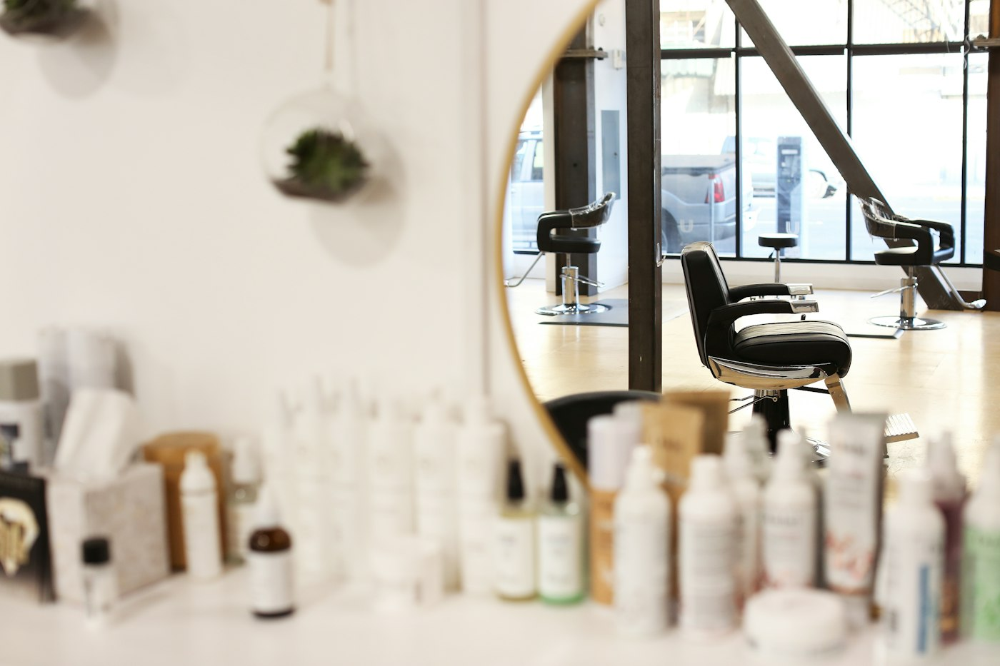

Conceptコンセプト
clair = bright, veil = veil
光を、髪にまとうように。
店名の clair veil（クレール ヴェール）は、フランス語の「明るい」と「ベール」から。
日差しや照明に当たったとき、ふわっと透けて見える。
そんな、光をまとうような髪色をつくりたいと考えています。

Our Policy3つのこだわり

01
ブリーチなしでも「透ける」色
日本人の髪は赤みや黄みが出やすく、明るくすると色がにごりがちです。当店では、その赤み・黄みを打ち消す色を細かく調合し、ブリーチをしなくてもくすんだ透明感が出るカラーを基本にしています。
02
骨格に合わせたレイヤーカット
レイヤーカット（髪に段差をつけて軽さと動きを出すカット）は、入れる位置で印象が大きく変わります。頭の形・顔の形・髪のクセを見て、乾かすだけでまとまる位置を見極めます。
03
色を長く楽しむためのケア
透明感カラーは、髪の状態が良いほどきれいに発色し、長持ちします。カラーの前後に髪を守る処理を行い、ご自宅でのシャンプーの仕方や色持ちのコツもお伝えしています。
Transparent Color透明感カラーへの考え方
STEP 1
髪の「地の色」を見る
今の髪に残っている赤み・黄みの強さを、根元から毛先まで確認します。
STEP 2
打ち消す色を重ねる
赤みには緑み、黄みには紫みなど、反対の色を少し混ぜて、にごりを消します。
STEP 3
やわらかく仕上げる
光が通りやすい淡い色を最後にのせ、ツヤと透け感を引き出します。
Salon店内のご紹介
席は4席だけ。白とベージュでまとめた、明るく静かな空間です。



※ 写真はイメージです（素材写真を使用しています）。
Reservation
まずはお気軽にご相談ください。